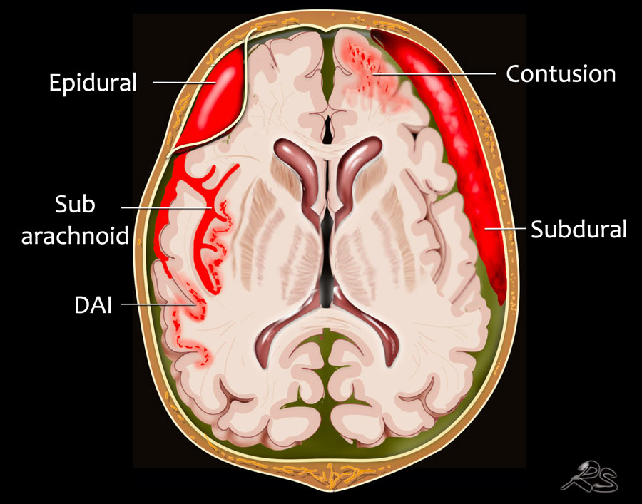

A brain hemorrhage is a type of stroke. It's caused by an artery in the brain bursting and causing localized bleeding in the surrounding tissues.
This bleeding kills brain cells.
The Greek root for blood is hemo. Hemorrhage literally means "blood bursting forth." Brain hemorrhages are also called cerebral hemorrhages, intracranial hemorrhages, or intracerebral hemorrhages. They account for about 13% of strokes.
Bleeding deep in the brain usually occurs when small vessels break and blood is allowed to enter into the brain tissue.
Hypertension or high blood pressure is the most common reason these small blood vessels break.
The procedure – being trialed at Cleveland Clinic and two dozen other U.S. hospitals – uses a syringe-like device to access the hemorrhage site by navigating through the natural folds and fibers of the brain.
A surgeon makes a dime-sized incision, and slowly “pushes” the device to the problem area – gently moving brain matter to the side, like wind through a wheat field, until it reaches the hemorrhage, where blood is captured and removed.